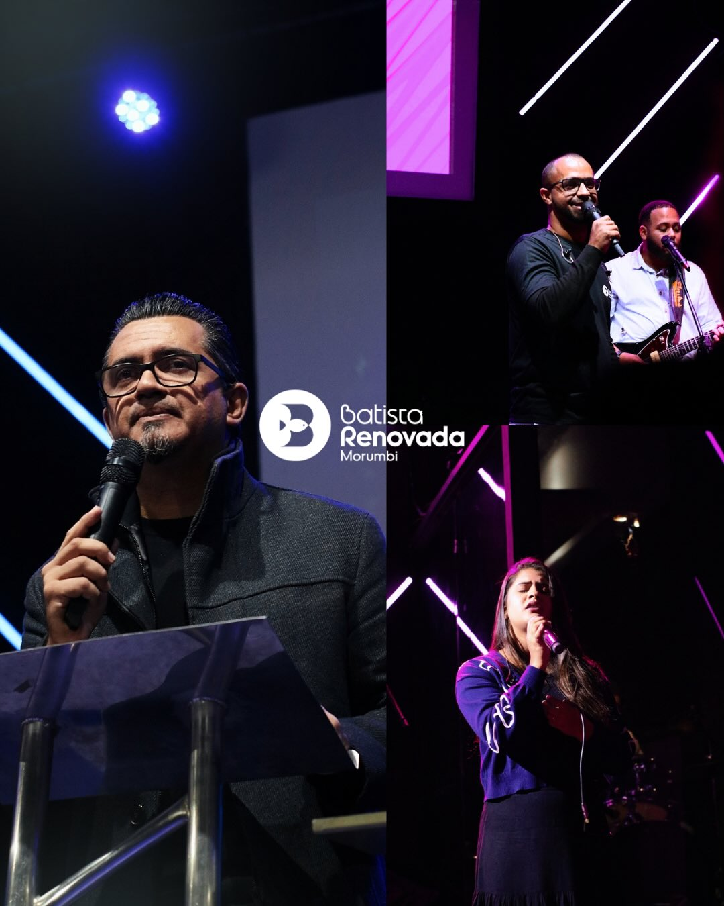
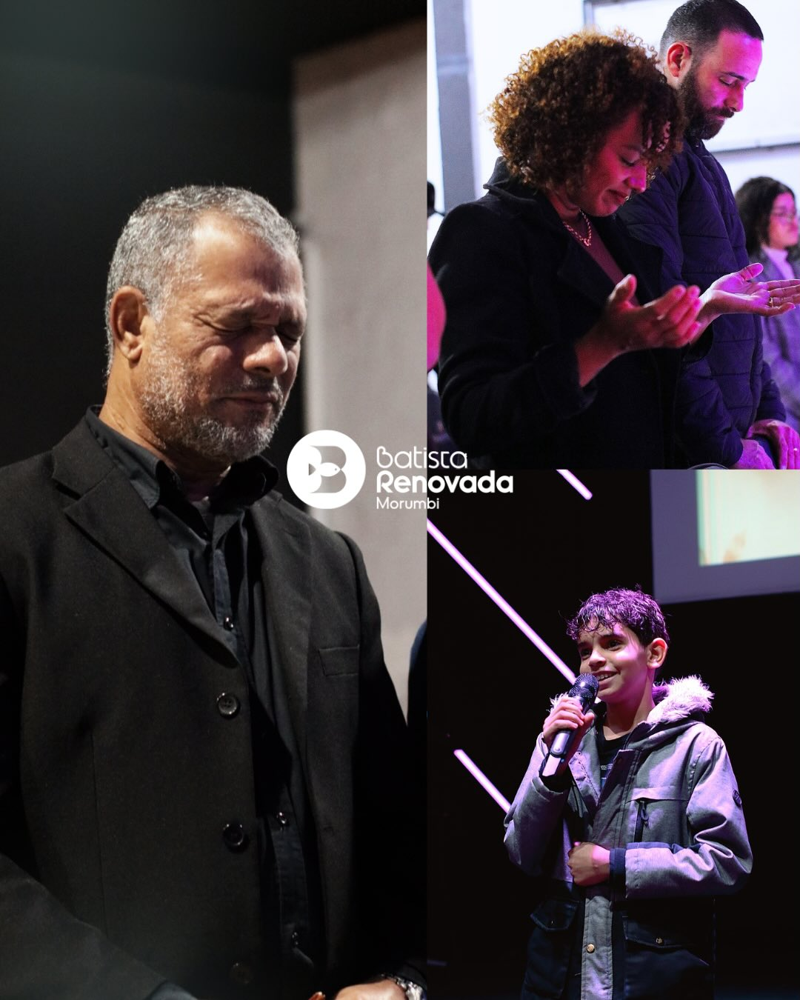
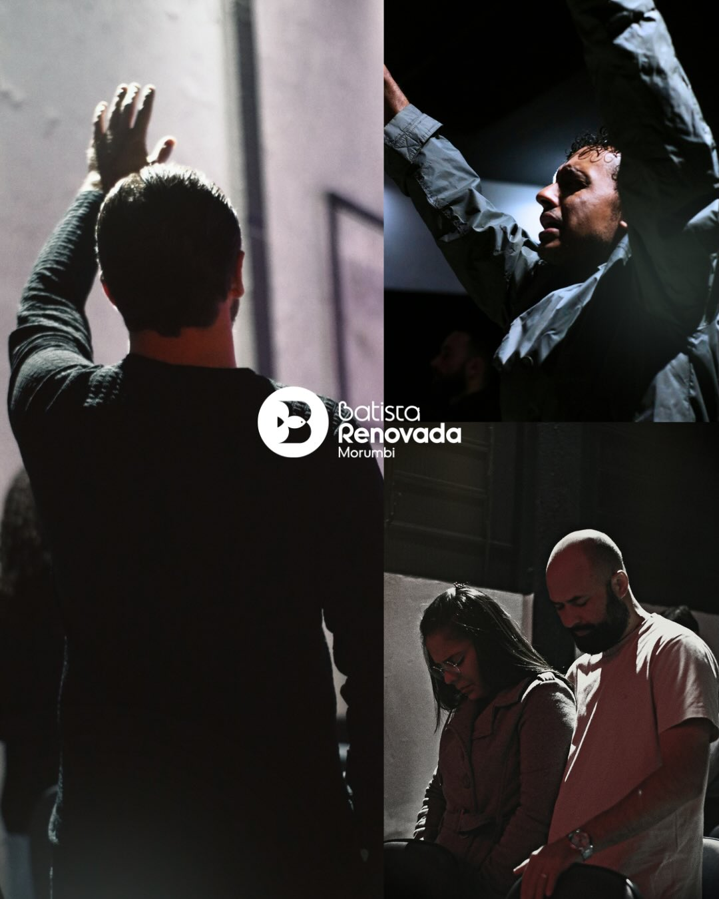
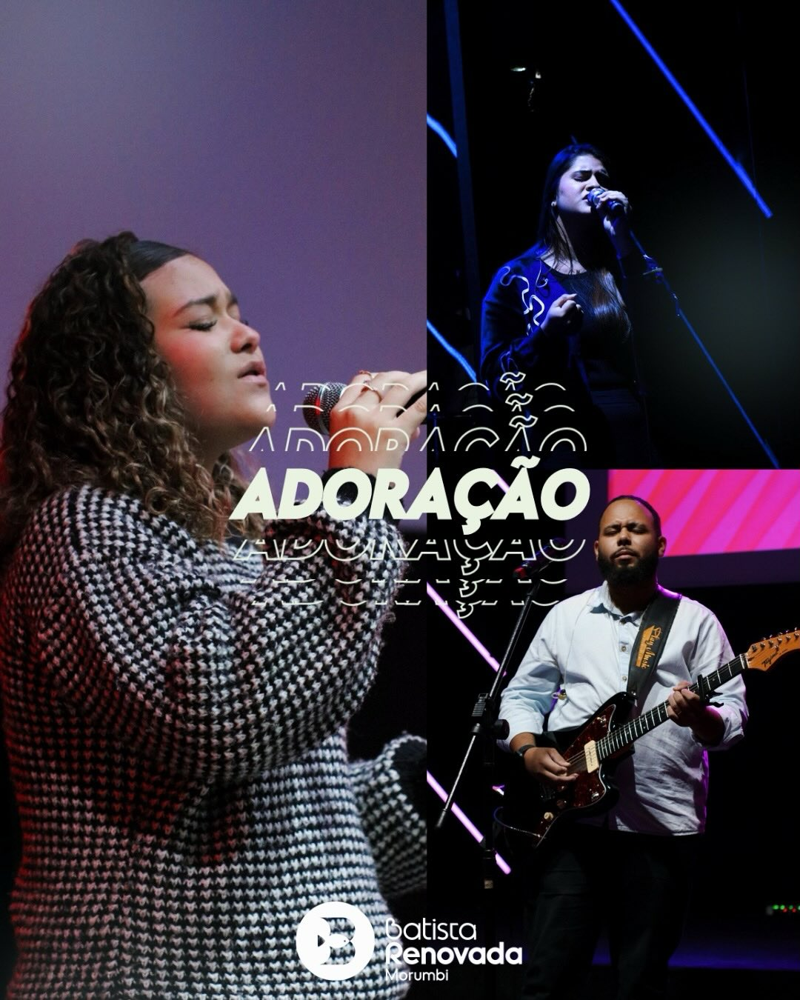
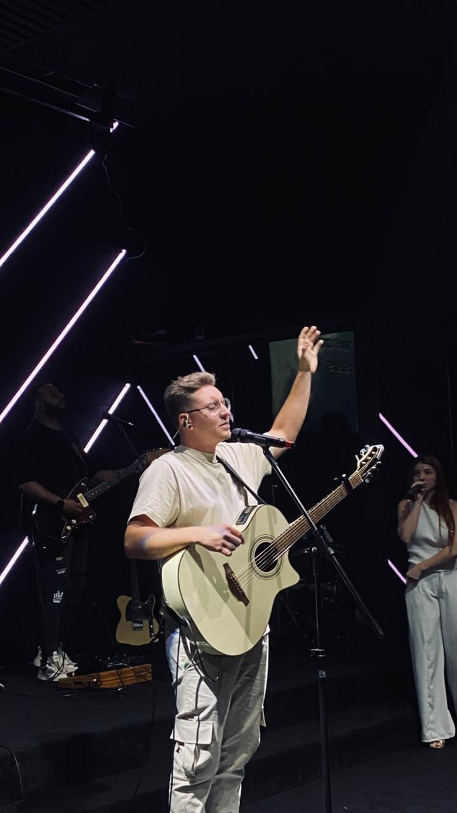

Registros de adoração, comunhão e entrega em nossa comunidade.





Um espaço de comunhão, discipulado e crescimento espiritual. Encontre uma célula, participe de um pequeno grupo e caminhe mais perto de Deus e de pessoas.
Quero participarFale conosco para conhecer os grupos, dias, horários e encontrar a célula mais próxima de você.
Conheça os ministérios que servem, acolhem e fortalecem nossa comunidade através da fé, do amor e do propósito.
De crianças a idosos, cada pessoa encontra aqui um lugar para crescer na fé e servir conforme seus dons.
Um ambiente seguro e lúdico onde crianças de 0 a 11 anos aprendem sobre o amor de Deus através de histórias, música e brincadeiras.
Encontros semanais, retiros e grupos de discipulado para adolescentes e jovens construírem uma fé própria e autêntica.
Equipe de música e produção dedicada a conduzir a igreja em momentos de adoração autêntica em cada culto.
Encontros, aconselhamento e estudos voltados a fortalecer o casamento e a vida familiar à luz da Palavra.
Projetos de assistência a famílias em vulnerabilidade no entorno do Morumbi, com doações, mutirões e visitas.
Pequenos grupos que se reúnem durante a semana em casas pelo bairro para estudo bíblico e comunhão próxima.
Acompanhe os próximos encontros, retiros e celebrações da nossa comunidade.
Conferência da Batista Renovada® São Jorge.
⏰17:00h
Nossa equipe de intercessão recebe e ora por cada pedido com cuidado e confidencialidade.
"Não andeis ansiosos por coisa alguma; em tudo, porém, em oração e súplicas, com ações de graças, apresentai vossas petições a Deus." — Filipenses 4:6
Estamos no Morumbi, de portas abertas para receber você e sua família em qualquer um dos nossos cultos.
Terça a sábado · 9h às 18h